| SystemTap Graphing | ||
|---|---|---|
|
|
|
|
| SystemTap IDE | Copyright Information | |
When a SystemTap script is launched under a Run Configuration with the Graph the output of this script run option enabled, it is possible to plot its output in graph form. (If you are unfamiliar with how to load or write a SystemTap script, please review the IDE Tutorial in the SystemTap IDE User's Guide.) A variety of graph types are available for plotting the output of SystemTap scripts:
These graph types can be instantiated as soon as a script is run by creating them in a script's Run Configuration, or after a script run has been initiated by using the
 Create Graph wizard in the Graph Selector View. Please refer to
Lesson 3: Running Your Script for information on how to use Run Configurations and regular expressions to capture data from a script's output, and how to plot that data in graphs.
Create Graph wizard in the Graph Selector View. Please refer to
Lesson 3: Running Your Script for information on how to use Run Configurations and regular expressions to capture data from a script's output, and how to plot that data in graphs.
This tutorial picks up from where Lesson 3: Running Your Script left off, and provides more information on graph configuration. If you followed that tutorial already, click Run As -> Run Configurations... and view the configuration you created earlier. If not, follow that tutorial now, and return here when you have finished.
Once the Run Configuration menu is opened with your configuration selected, click on the Graphing tab. At the bottom of the window, a section labeled Graph Set # displays a list of all graphs created for the currently-selected Regular Expression (the # in Graph Set # indicates which expression is chosen). There is also a set of buttons related to graph configuration:
Note: Each regular expression you create has its own Graph Set. When creating & editing graphs, the only graphs that will be visible in the Graph Set # section will be the graphs used for the expression currently selected in the Regular Expression combo box.
The Create Graph (or Edit Graph Wizard is used when creating a new graph or editing an existing one. It allows you to set all properties of a graph, such as its title, graph type, and series data.
Note that two different series may not share the same data selection.
The Data Table is a view that is always available when running a script with the chart option. It initially starts empty and populates as it recieves information parsed from the console originally from the script. The Data Table is a visualization of the data structure that every other graph type spawns from.
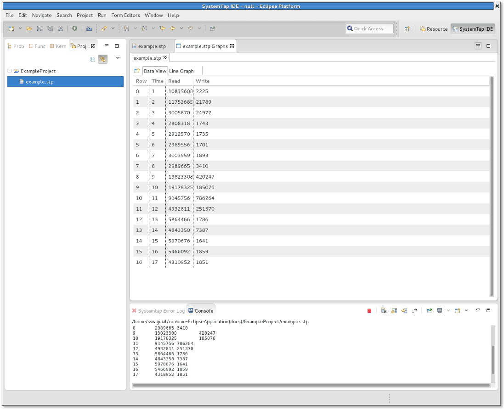
The columns of the Data Table can be resized at will by dragging the separation lines between column headers, as long as the Auto resize columns option (in Preferences->SystemTap->Graphing->Data Table) has been deactivated. In addition, the information in the data table can be saved and loaded without having to re-run the script. Furthermore, the user can populate the Data Table without having to run a script if a script's output has been saved into a file; see Opening Script Output. Right clicking the Data Table provides a menu with the following options:
Currently there are five graph types built into SystemTap Plug-in.
These graph types can be used instantiated by using the Create Graph wizard once the Data Table is populated. The Graphing Perspective can support multiple graphs from one Data Table. Each are updated and can be viewed by navigating through the tabs shown at the top of each Graph Set while in the Graph Selector View.
A Scatter Graph uses Cartesian coordinates to show the relation of two or more quantitative variables. All values must be numeric.
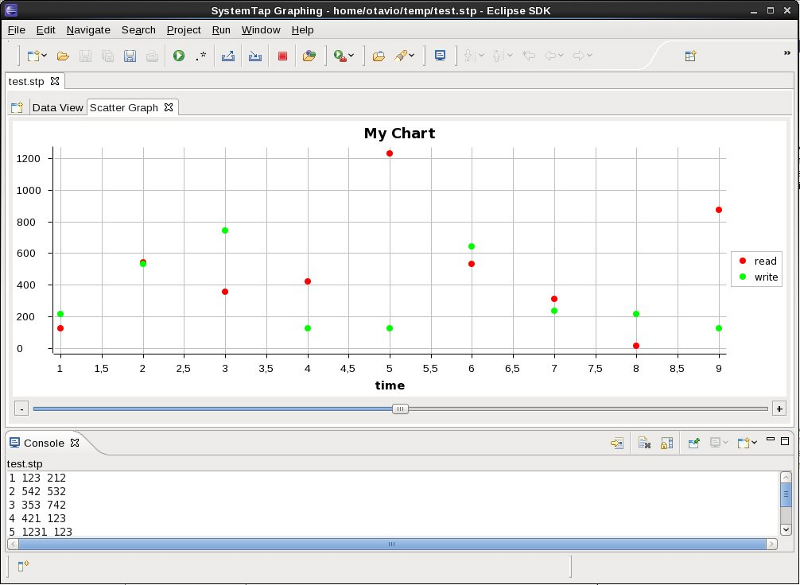
The Line Graph is traditionally ideal for horizontally depicting non-cumulative data over, say, time. All values must be numeric.
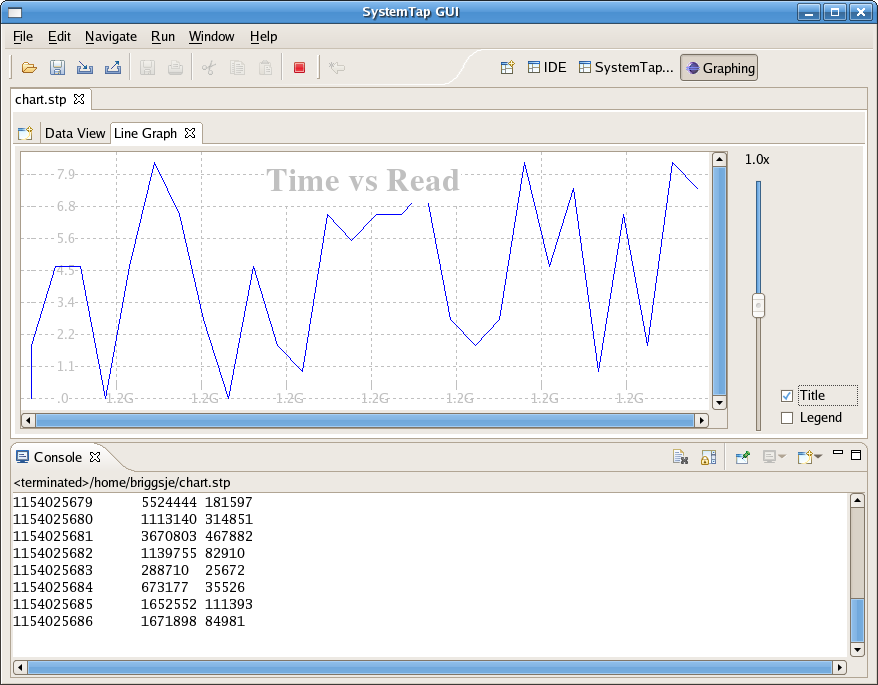
The Area Graph is traditionally ideal for horizontally depicting non-cumulative data over, say, time. All values must be numeric.
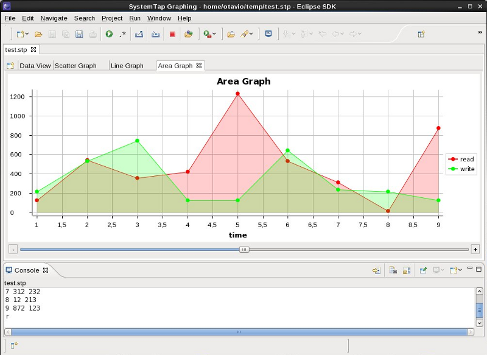
The Bar Graph typically uses bars to show frequencies or values. Labels can be given to bars by applying string values to the x-axis. Y-axis values, though, must be numeric.
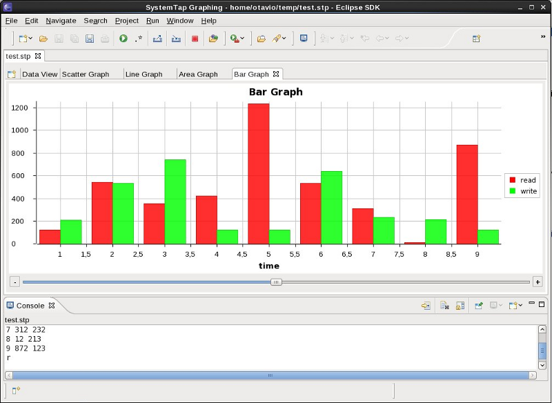
The Pie Graph uses a pie to show percentages. One pie is drawn for each data series provided. Titles can be given to slices by applying string values to the x-axis. Y-axis values, though, must be numeric.
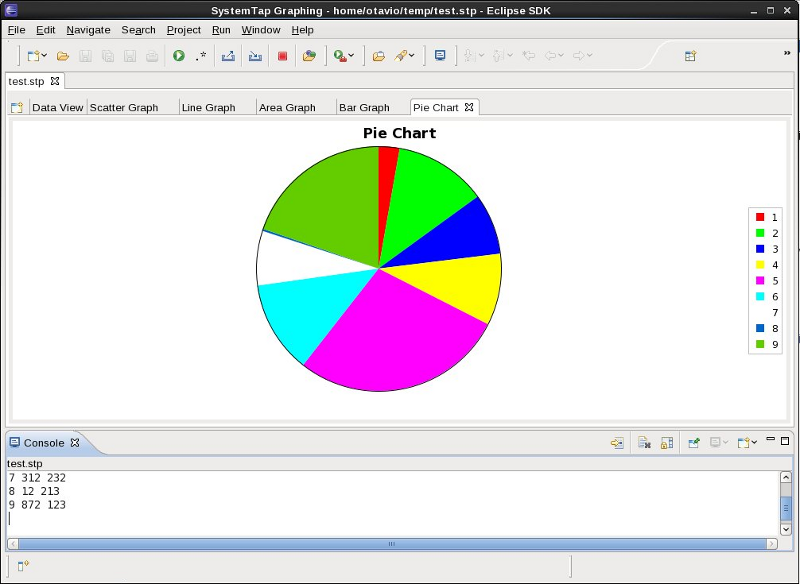
Filters are screens that you can set on your Data Table to limit the quantity of samples you wish to work with. Filters are very often used in restricting the sheer amount of information available to make data tables and graphs more substantial and manageable.
The following options exist to work with Filters in the Data Table:
When you select Add Filter you see the following dialogue box:

What follows is a breakdown of each Filter type, and an example of how each affects this sample data set:
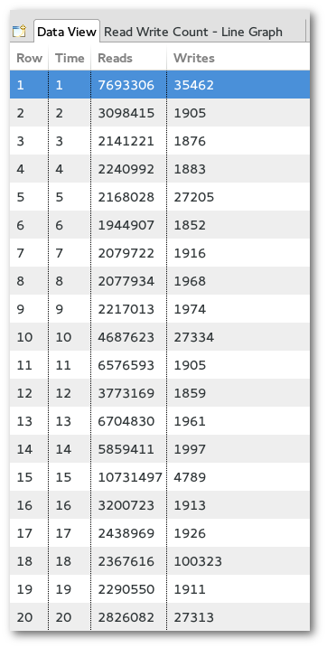
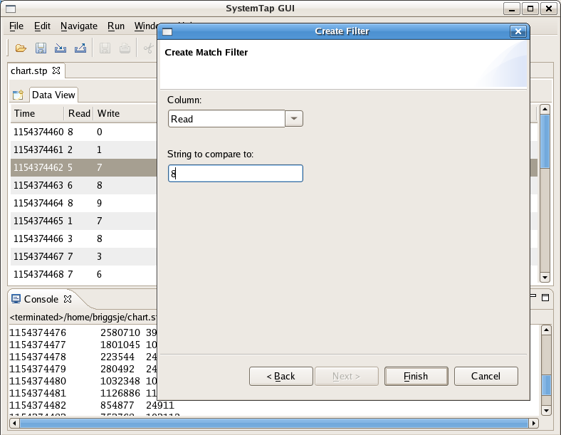
Result:

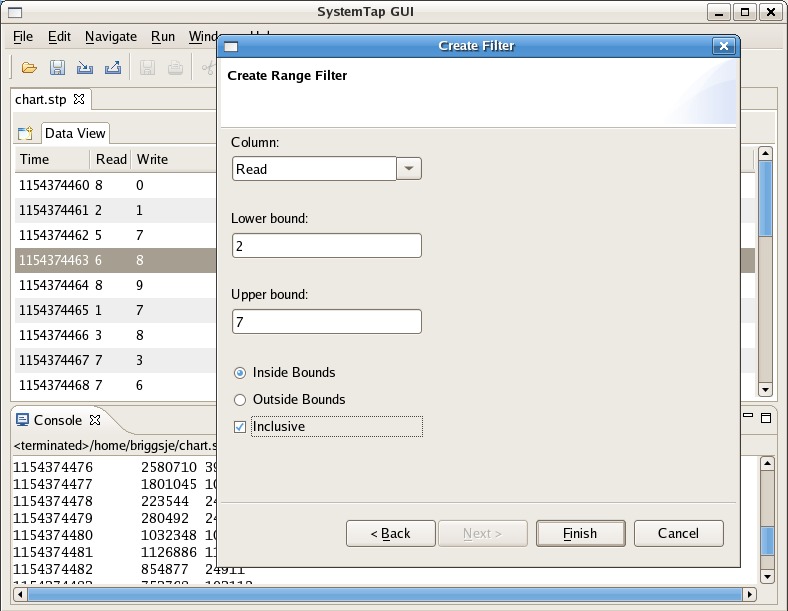
Result:
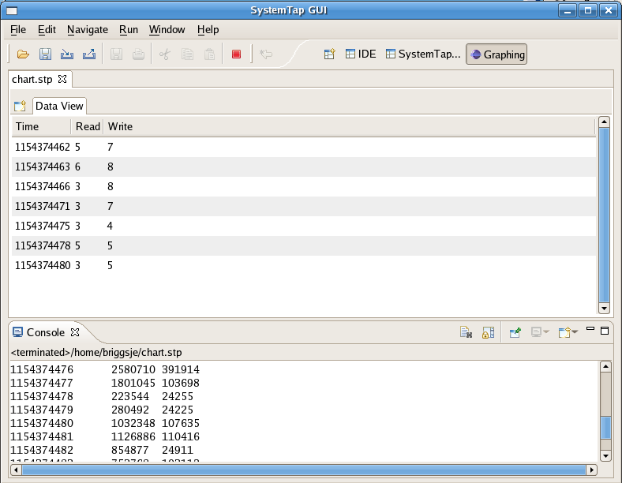
removed.

Result:
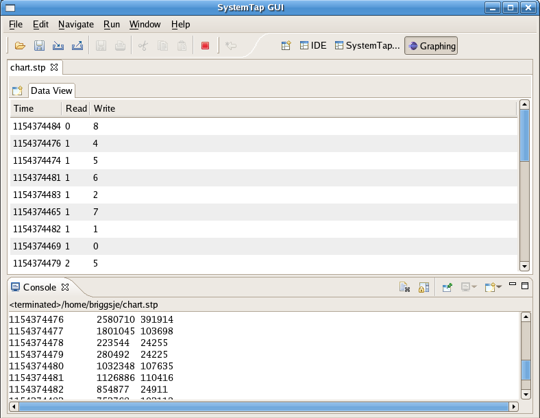
value in the selected column. Data for the removed rows will be aggregated together based on the chosen aggregation method.
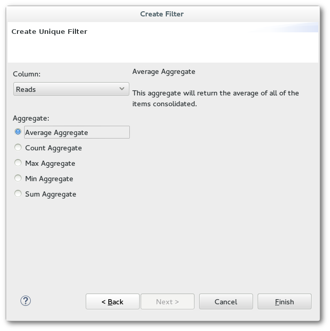
Each of the Graph Types have similar options that can be used in the Graph Selector View:
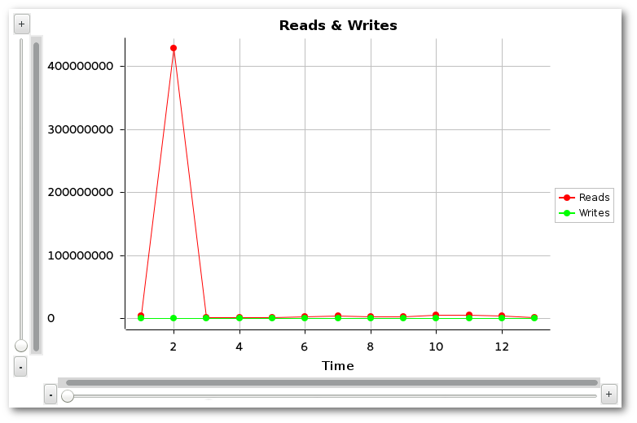
To zoom in/out of a continuous axis (ie Scatter/Line/Area Graph), use the +/- buttons or the Scale bar beneath / to the left of a graph. To scroll through the viewing area, use the horizontal/vertical scroll bars provided.

Specialized controls are available for zooming & scrolling through discrete axis, namely the bars of a Bar Graph or the pies of a Pie Chart.

Zooming is performed with the Zoom In/Out buttons beneath the graph. To scroll to left or right, click < or > respectively. To jump to the beginning or end of the axis, click << or >> respectively.

Use Preferences to configure other graph settings, such as grid lines and viewable data items.
Hover over any data point on a graph to display detailed information about that point's coordinates. This feature is available for all graph types.
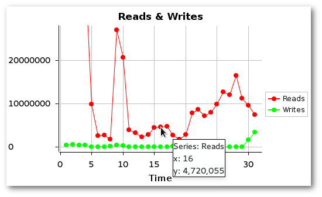
A data set is comprised of the contents of a Graph Set's data table. From time to time the user may want to preserve this data for continued work at a later date/time or to share findings with others. The Importing and Exporting options provide an easy way to do this.
To save a data set, click the Export Data Set toolbar button while viewing one of the tabs of the Graph Set data that is to be saved (either the Data Table or one of its graphs). To load & display a previously-exported data set, use the Import Data Set toolbar button, which is available at all times.
 The Data Set toolbar buttons that appear while viewing a Graph Set. (Blue/left: Export. Red/Right: Import.)
The Data Set toolbar buttons that appear while viewing a Graph Set. (Blue/left: Export. Red/Right: Import.)
 The Import Data Set button as it appears while a Graph Set is not being viewed.
The Import Data Set button as it appears while a Graph Set is not being viewed.
In either case, a file dialog will appear to allow the user to choose the path on the filesystem where the data set should be exported to / imported from.
It is possible to save graphs as image files. To do so, view the graph that is to be saved and click the Save Graph button that appears in the toolbar. This opens a dialogue box where the user can navigate to the location they desire to save the image file.
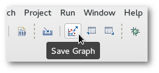
This section details frequently asked questions relating to graphing script output.
Can I make more than one graph at one time? Do they update concurrently?
A: Yes and yes. In the Run Configuration of the script you want to create plots of, you can create multiple graphs at once. Also, after a graph-enabled script is run, you may create several additional graphs by clicking the Graph Wizard button in the Graph Selector View.
Can I increase the rate at which graphs are updated?
A: Yes. By default it is set to once per second, but you can increase this in Preferences.
Is there any way to save or export the graph images?
A: Yes. A Save Graph button appears in the toolbar whenever you are viewing a graph. Clicking it will allow you to save the graph currently in focus.
What if I want to preserve this data for manipulation later?
A: While viewing a Data Table or one of the graphs it provides data to, the Export Data Set toolbar button is available. Click this button to save the focused Data Table's contents into a .set file. Such files can be loaded back later with the Import Data Set button on the toolbar (which is always available).
|
|

|
|
| SystemTap IDE | Copyright Information |